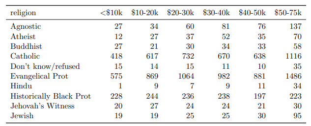
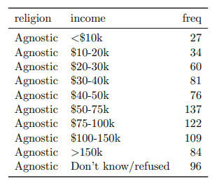

#Import .csv
filename <- read_csv("data/filename.csv")
#Import .xlsx
filename <- read_excel("data/filename.xlsx")
#Import .rds
filename <- read_rds("data/filename.rds")
#Load .rda
load("data/filename.rda")Tidy Data
Chapter 4
Today’s goals
- Import datasets
- Can you determine if a dataset is tidy or messy?
- Conduct an EDA
Artwork by @allison_horst
Importing Data
Use the tidyverse and readxl packages to import data.
Computers are not smart! It can only access files that are sitting in your working directory. You must direct the computer to the file your data is located in!
Tidy Data
There are three interrelated rules which make a dataset tidy:
- Each variable must have its own column.
- Each observation must have its own row.
- Each value must have its own cell.
Tidy Data (continued)
Which of the following are tidy?


EDA
Before using your data to make inferences, you should conduct an exploratory data analysis.
You do this by:
- looking at the raw data:
skim(data) - looking at the summary stats: mean, sd, median, min, max, missing values
- and visualizing the data:
ggplot()
This helps you understand the data, form hypothesis, and aid in interpreting results.
Example: EDA
library(skimr)
skim(penguins)| Name | penguins |
| Number of rows | 344 |
| Number of columns | 8 |
| _______________________ | |
| Column type frequency: | |
| factor | 3 |
| numeric | 5 |
| ________________________ | |
| Group variables | None |
Variable type: factor
| skim_variable | n_missing | complete_rate | ordered | n_unique | top_counts |
|---|---|---|---|---|---|
| species | 0 | 1.00 | FALSE | 3 | Ade: 152, Gen: 124, Chi: 68 |
| island | 0 | 1.00 | FALSE | 3 | Bis: 168, Dre: 124, Tor: 52 |
| sex | 11 | 0.97 | FALSE | 2 | mal: 168, fem: 165 |
Variable type: numeric
| skim_variable | n_missing | complete_rate | mean | sd | p0 | p25 | p50 | p75 | p100 | hist |
|---|---|---|---|---|---|---|---|---|---|---|
| bill_length_mm | 2 | 0.99 | 43.92 | 5.46 | 32.1 | 39.23 | 44.45 | 48.5 | 59.6 | ▃▇▇▆▁ |
| bill_depth_mm | 2 | 0.99 | 17.15 | 1.97 | 13.1 | 15.60 | 17.30 | 18.7 | 21.5 | ▅▅▇▇▂ |
| flipper_length_mm | 2 | 0.99 | 200.92 | 14.06 | 172.0 | 190.00 | 197.00 | 213.0 | 231.0 | ▂▇▃▅▂ |
| body_mass_g | 2 | 0.99 | 4201.75 | 801.95 | 2700.0 | 3550.00 | 4050.00 | 4750.0 | 6300.0 | ▃▇▆▃▂ |
| year | 0 | 1.00 | 2008.03 | 0.82 | 2007.0 | 2007.00 | 2008.00 | 2009.0 | 2009.0 | ▇▁▇▁▇ |